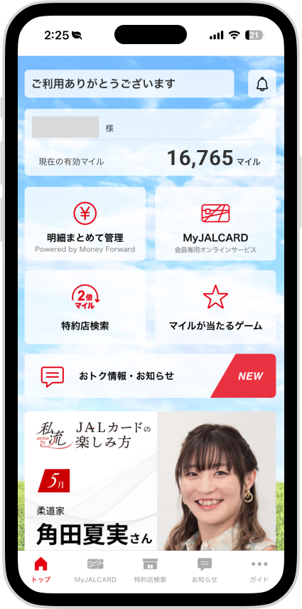
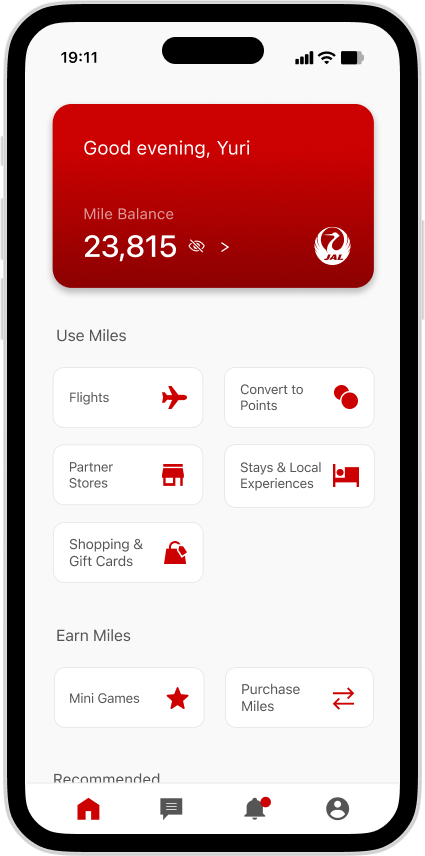
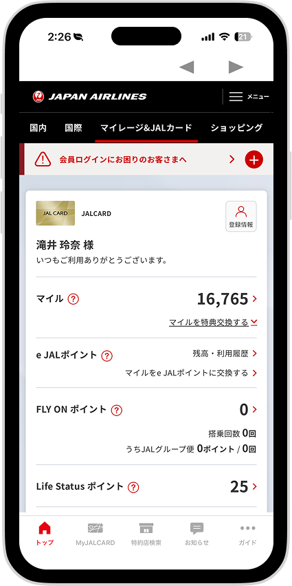
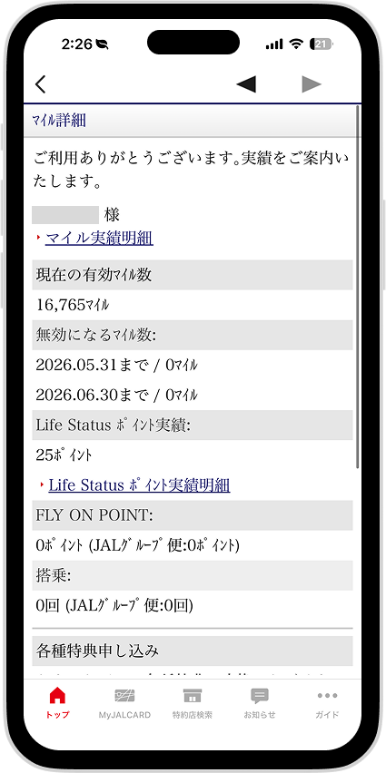
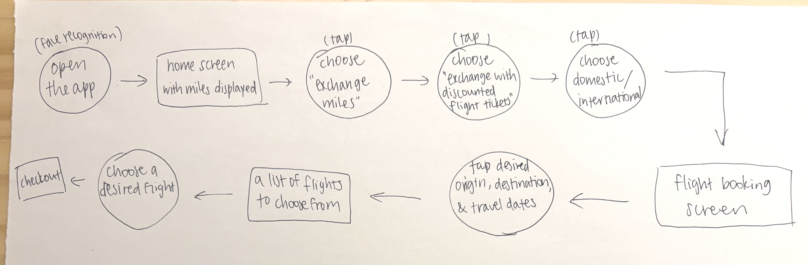
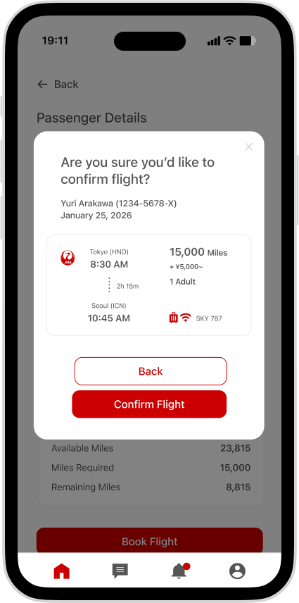

UX Case Study
JAL Card App — Mile Redemption Redesign
JAL Card users earn miles but cannot redeem them easily because the app design makes it impossible for users to find the redemption options. I redesigned the information architecture and visual hierarchy to make mile redemption intuitive while preserving the excitement of travel.
Original (left) and redesigned (right).


The Problem
I conducted interviews with three JAL Card App users who travel frequently / plan to travel soon. They consistently abandoned the mile redemption process because the app made it too stressful to start. One pattern was consistent among the three users: they couldn't find where to begin, and the dense, system-like interface made them feel exhausted, and one of them even gave up traveling.
Original screens for mile redemption.


What I Did and Why
I audited the existing user journey and identified six drop-off points. I started with information architecture before redesigning the UI, making sure that the drop-off points are eliminated in my reconstructed information architecture.
For visual language, I made a deliberate choice to shift away from JAL's dominant dark gray palette, which was creating a heavy atmosphere. I used JAL Red strictly for high-impact CTAs and brand markers and used medium font weights to improve legibility.
I chose to test early with the same users from initial interviews, giving them a hypothetical scenario rather than abstract feedback tasks, so responses reflected real behavior patterns.


What Changed
Users rated navigation 4.5/5 in testing. The key friction point, which was to find the redemption entry, was resolved. However, one user raised a new insight that a single-click flight purchase felt too abrupt, so I added a confirmation screen (right) to prevent accidental redemptions.

Before & After
The mile usage navigation was turned into a dedicated page, creating a smoother transition with a consistent format using a card-based layout. Options are grouped by category with icons rather than listed in a flat structure. Original (left) and redesigned (right).
On the flight options page, airline icons, miles, travel times, and CTA buttons are laid out with clear priority. The signature red draws the eye directly to the action the user needs to take next. Original (left) and redesigned (right).


Reflection
The biggest shift in my thinking was realizing that cognitive load isn't just a usability problem but an emotional one. When an app feels like a task, it kills the excitement entirely. Solving the architecture and making changes to the visual layer not only improved usability but also restored the joy of travel for users.